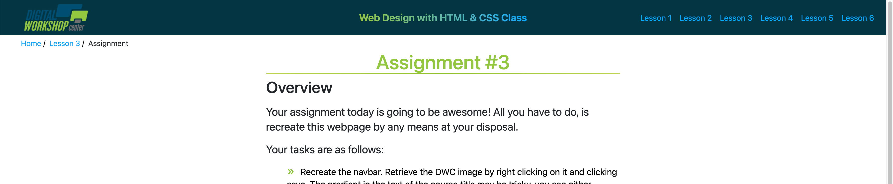

Assignment #3
Overview
Your assignment today is going to be awesome! All you have to do, is recreate this webpage by any means at your disposal.
Your tasks are as follows:
-
Create an html file called
assignment3.htmland a css file calledassignment3.css. -
Recreate the navbar. Retrieve the DWC image by right clicking on it and clicking save. The gradient in the text of the course title may be tricky, you can either inspect the element, or google how to do a gradient. It will also be tricky getting three distinct sections of the navbar. It may be helpful to do a google search for something like
navbar with three sections. Notice that the navbar looks like this:
 -
Create the breadcrumb (be sure to include links to this website's pages).
-
Create the body content section with all the space on both sides. Again, it may be helpful to look inspect the code to see how much space is on each side and how it was done.
-
Now that you have a
divfor the body content, start with theh1tag at the top. Either inspecting the code to get the colors or using the Colorpick Eyedropper Chrome Extension will be very helpful. -
Finish the assignment by recreating the rest of the page...again, using any means at your disposal.
Stretch Challenge
-
Learn what Bootstrap is and use it in the navbar so that your navbar can collapse like the website can that you're working off of.
Assignment Walkthrough
This video goes through the entire assignment not including the stretch challenges.